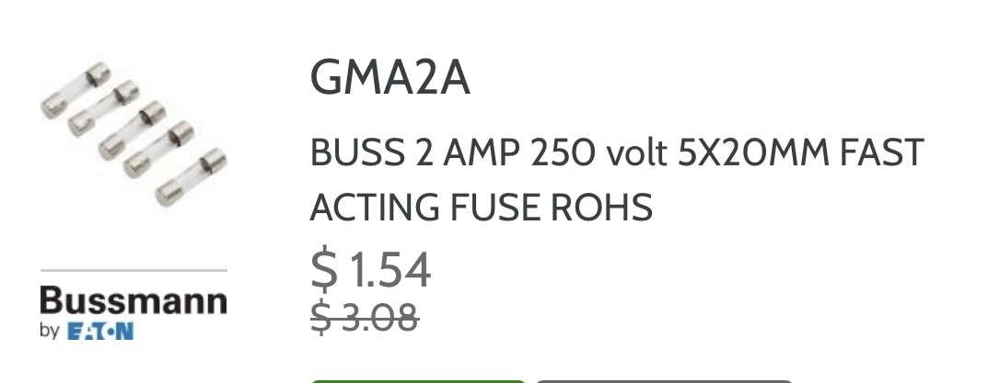

Recommended specialty parts that each rack refrigeration technician should keep stocked on their service truck.

2 Amp Control Board Fuse
URI Part Number: GMA2A
Fuse: 2 Amp, 250 Volt, 5x20mm Fast Acting
Recommended Truck Quantity: 20
Common Uses: Used on many rack refrigeration control boards including CPC and MultiFlex control boards.

Dixell Defrost Termination Sensor
URI Part Number:
501-1127
Product:
Emerson / Dixell Defrost Termination Sensor
Recommended Truck Quantity:
1
Common Uses:
Used with Dixell refrigeration controllers on reach-in style freezers.
The sensor monitors evaporator temperature and helps control the
defrost termination circuit.
Team Standard:
Each technician should keep one replacement defrost termination
sensor on the truck for troubleshooting and repair of Dixell-controlled
reach-in freezer systems.
 TA-1 Acid Test Kit
TA-1 Acid Test Kit
URI Part Number: TA-1
Product: Sporlan Test-All Acid Test Kit
Recommended Truck Quantity: 1
Common Uses:
Used to test refrigeration system oil for acid contamination.
Team Standard:
Perform an acid test whenever a failed compressor is found.